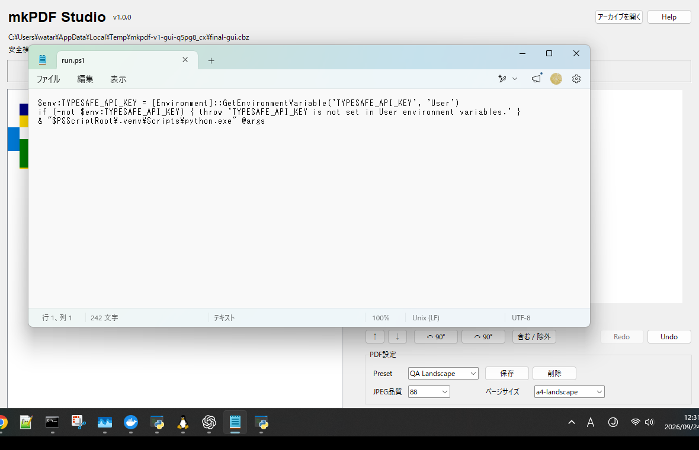

Archive inspection
ZIP / CBZ / 7z / RAR / CBR / CB7に対応。危険なパス、リンク、異常サイズや圧縮率を変換前に検査します。
Python / Desktop / PDF
v1.0.0

画像入りアーカイブを展開前に検査し、ページの順番・回転・除外を確認してからPDFへまとめるWindowsデスクトップツールです。元アーカイブを削除せず、変換後のPDFもページ数まで検証してから完成ファイルとして保存します。
ZIP / CBZ / 7z / RAR / CBR / CB7に対応。危険なパス、リンク、異常サイズや圧縮率を変換前に検査します。
サムネイルを見ながら並べ替え、複数選択、90°回転、含む・除外、Undo / Redoを操作できます。
JPEG品質、原寸、A4縦・横を選択。Balanced / Compact / Print A4のPresetに加えて独自Presetも保存できます。
アーカイブ内容や生成PDFを外部サービスへ送信しません。設定には表示状態やPresetだけを保存します。
Windows向けソースリリースです。Python 3.11以上と7-Zipを使用します。